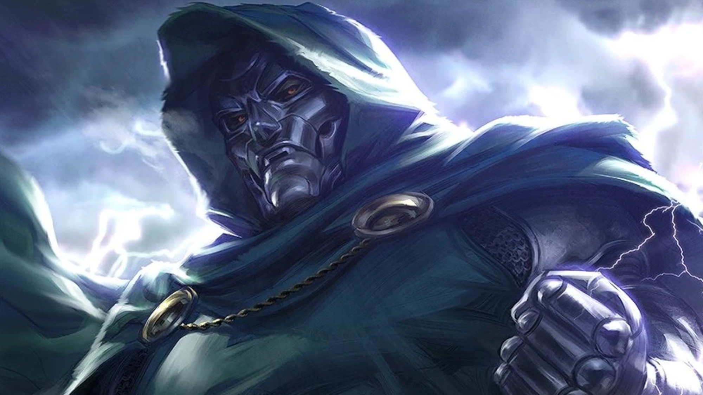

Victor von DOOM (Doctor DOOM)
Victor von Doom, known as Doctor Doom, is a brilliant yet power-hungry ruler of the Eastern European nation of Latveria. Born to a Romani camp, Victor's early life was marked by tragedy when his mother, a witch named Cynthia, died after striking a deal with the demon Mephisto. Swearing vengeance, Victor dedicated his life to mastering both science and magic. During his time in academia, he became a fierce rival of Reed Richards, who would later become Mister Fantastic, leader of the Fantastic Four. A failed experiment to contact his late mother left Victor scarred, leading him to seek refuge with Tibetan monks who helped him create a suit of armor and an iron mask to hide his disfigurement. Thus, he became Doctor Doom and returned to Latveria, using his vast knowledge and skills to seize control of the country.
Despite his intentions to bring order and improvement to humanity, Doctor Doom's methods are dictatorial and ruthless. His greatest enemies are the Fantastic Four, particularly Mister Fantastic, whom he holds responsible for his disfigurement. Over the years, Doom has aligned with various allies, including his adoptive son Kristoff Vernard and his loyal champion, Victorious. He has also wielded immense power on several occasions, stealing it from beings like the Silver Surfer, the Beyonder, and the Scarlet Witch. His most significant achievement was when he usurped the omnipotent power of the Beyonders and reshaped the remnants of the destroyed Multiverse into Battleworld, ruling as God Emperor until his eventual defeat and the restoration of reality by Mister Fantastic.
In recent events, Doctor Doom played a crucial role in stopping a global vampire invasion led by the ancient evil Varnae, who shrouded the Earth in perpetual darkness using Darkforce. Doom aided a weakened Doctor Strange in dispelling the Darkforce in exchange for the title of Sorcerer Supreme. However, after the world was freed, Doom refused to relinquish the mantle, believing that his work was far from finished and that the world still needed his protection.